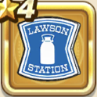

ローソンシールド
攻略班 5.5点 / シールドアタックうけながしのかまえ封印耐性+5%
くわしい特徴
【レベル別習得スキル】 Lv1シールドアタック（消費MP：4）盾で身を守りつつ敵1体に威力100%の体技ダメージを与えぼうぎょする Lv8うけながしのかまえ（消費MP：18）1ターンの間に1度だけ物理攻撃をランダムな敵に跳ね返す Lv8封印耐性+5% Lv14かいふく魔力+5% Lv20ガード率+1% 【限界突破スキル】 1凸封印耐性+5% 2凸ガード率+1% 3凸守備力+3 4凸ガード率+1%